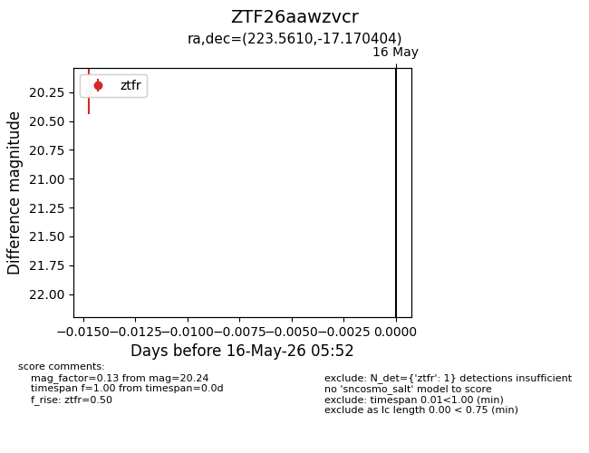
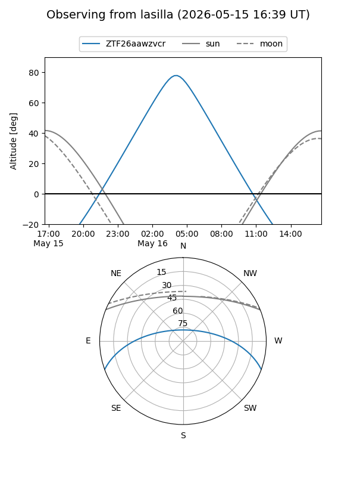
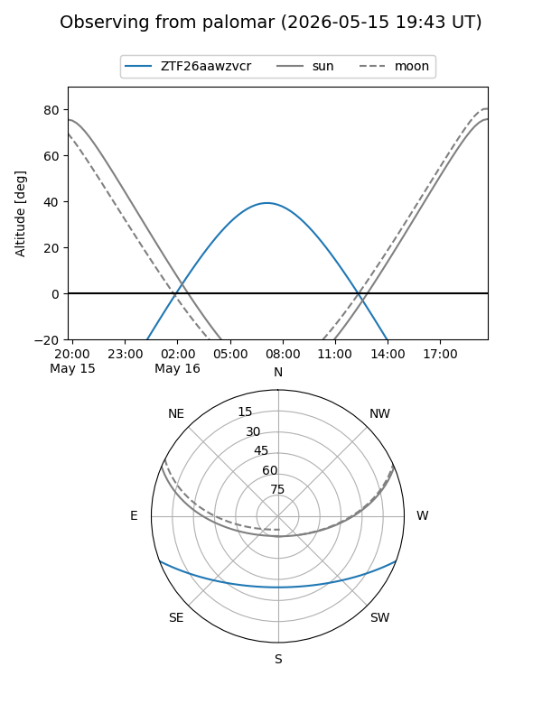

ZTF26aawzvcr
Target ZTF26aawzvcr at 2026-05-16 05:54
Aliases and brokers:
FINK: link
Lasair: link
ALeRCE: link
alt names
ZTF26aawzvcr (ztf,fink_ztf)
Coordinates:
equatorial (ra, dec) = 223.5610,-17.17040
equatorial (HMS+DMS) = 14:54:14.63,-17:10:13.45
galactic (l, b) = (340.3620,+36.62157)
Flags:
Photometry:
last ztfr=20.24
1 ztfr detections
Lightcurve

Visibility


Additional plots